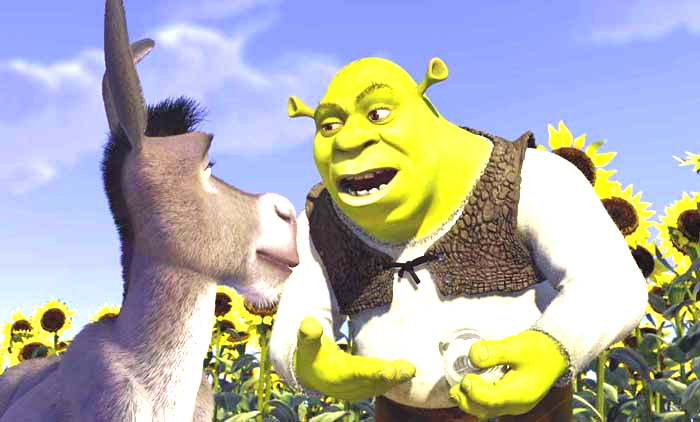
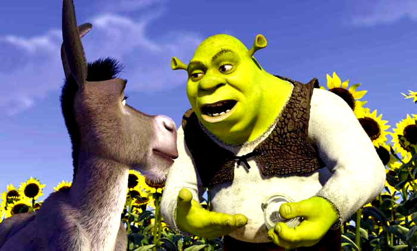
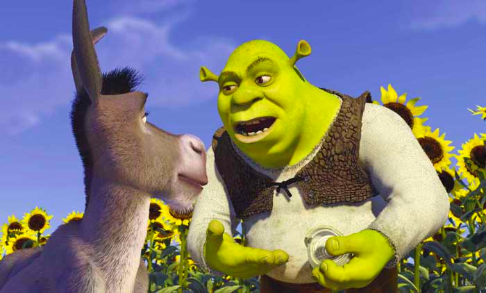
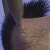
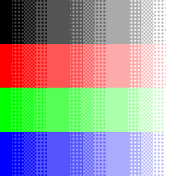
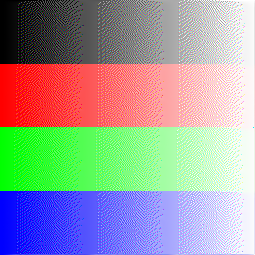
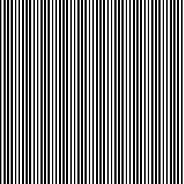
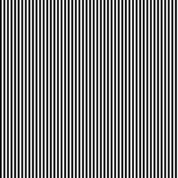
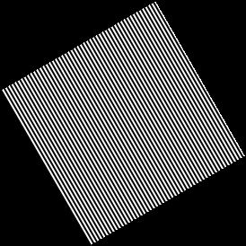
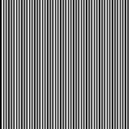

Coded and compiled in Visual Studio 2010 Express running Windows 7 64-bit
Late Days Used: 5


Adds a random amount of noise to each channel of each pixel of an image. The range of noise is determined by the noise parameter. To compute the noise to add, we compute ((rand() % 511) - 255), then multiply by the noise paramter. This genereates a (psuedo-)random number with value [-noise, noise].
0.5 noise
Increases or decreases the brightness value of the image, depending upon the value of the input parameter. I did not use an interpolation method for Brightness, instead simply sampling each pixel and multiplying each channel by the brightness factor.

Brighten 1.5
Creates a grayscale image by computing the luminance of each pixel from its channels, using the luminance formula. The determined luminance of the pixel is then written to each channel value, producing an image consisting of gray tones.

Increases the contrast of the image using the interpolation method. First it goes through each pixel in the image and determines its mean luminance value. Using this value, the new rgb values are computer with the interpolation formula, where A = the contrast factor. (1 - A)*meanLuminance + A*[R/G/B]

Contrast 1.5
Increases or decreases image saturation through interpolation. A new image is created using the Luminance function above. Then for each pixel in the source image, the interpolation formula is applied, with the alpha value being the saturation parameter

Saturation 1.5
Crops a portion of the image. A new image is created with width and height equal to the cropped area. The function then iterates over each pixel that will belong to the cropped region, mapping each pixel to its corresponding place in the cropped image.

Crop 100 100 200 200
Quantizes the image to appear to be represented with a certain number of bits, specified by a parameter value. Each pixel channel is multipled by (2 ^ bits), divided by 256, then multipled by a scaling value dervied from the number of bits available, as the exact number of bits the image is allowed to use cannot be sepecified. This is a way to present a quantized image in an 8bit/channel image format

Quantize 2 bits
Uses random noise along with quantization. A very simple function, it first calls RandomNoise on an image, then Quantize. The amoutn of noise added is dependant on the bits to quantize too, as a greater number of bits need less noise to account for quantization errors. The value of noise passed to RandomNoise is equal to 1 / (2 ^ bits)

rDither 2 bits
Uses a 2x2 thresholding matrix for quantization. The value used for thresholding is dependant on the pixel's x and y cooridinants, which when modded by 2 give the value in the matrix to use.

oDither 2 bits
Quantization that uses Error Diffusion to improve quality of the image. Floyd Steinburg method is applied, where the error between quantized and real value is distributed between adjacent pixels. To make sure the error diffision is normalize, any pixel index that would go out of range instead uses an appropriate border pixel to distribute error to.

fsDither 2 bits
Uses a 3x3 matrix to blur the image. The blurring mask contains values that sum up to 1, with greater values closer to the center. For each pixel in the source, the mask is applied to its surrounding pixels and written to the output image. For out of bounds cases, an appropriate border pixel is used for normalization.

Highlights edges of the image using a 3x3 matrix. The matrix used has values that sum to 0, with the center value equal to the negative sum of the outer ring, causing sharp changes in value to be much brighter. The same method for the blur is applied here.

Samples an image using simple rounding to determine the closest pixel to the given coordinates using rounding
Samples an image using a bilinear method. Uses the nearest 4 pixel values to the given location and adds them together, weighing each value depending on distance from the desired coordinate.
Changes the dimensions of an image by the given scaleFactor. The scaling functions all work in the same manner. Using reverse mapping, the outputImage is scaled by the given factor, and then each pixel is iterated over. The cooridnates of each pixel are divided by the scaleFactor, then are used as parameters for each function's specified sampling method.

ScaleNearest 1.3

ScaleBilinear 1.3
Rotates the image by a given angle. All rotation functions work in the same way, with only their sampling function being different. First, it must determine the new image size by taking the corners of the old image and applying a rotation to them, then finding the largest x and y coordinate found. After the image is resized, it goes through each pixel and reverse maps itself to the source image. Any coordinates that do not have a mapping to the source are set to black.

RotateNearest 1.3

RotateBilinear 1.3
I could not get my GaussianSample to properly sample the image. While I implemented the fucntion to the best of my ability and tried various values for the radius and variance, I kept getting results that looked more like Nearest Neighbor Sampling than Gaussian. The Scale and Rotate functions should work with a functioning GaussianSample, but I cannot check and confirm without the sampling working.

ScaleGaussian 1.3

RotateGaussian 1.3
SetAlpha
Composite
FunFilter
Beier-Neely Morphing
Movie file created by using increasing contrast values. The script below was put into a batch file and then executed: @echo off for /L %%X in (0,1,9) do ( for /L %%Y in (0,1,9) do ( Image --contrast 1.%%X%%Y --in shrek.bmp --out avi.%%X%%Y.bmp) ) The movie can be downloaded here. I'm not sure why the colors are different, but it does show increasing contrast values.